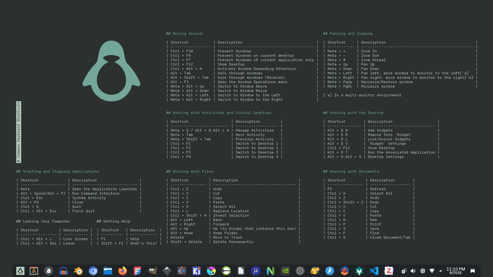
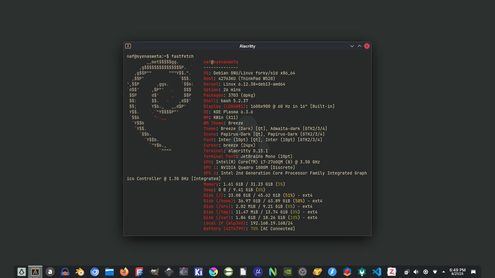
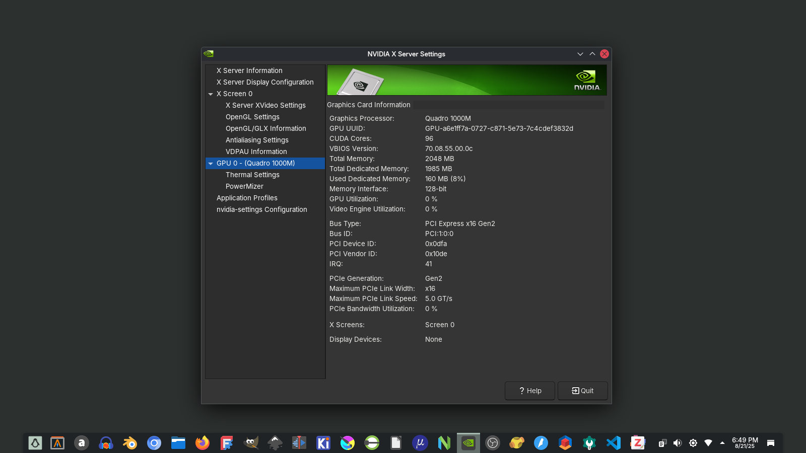
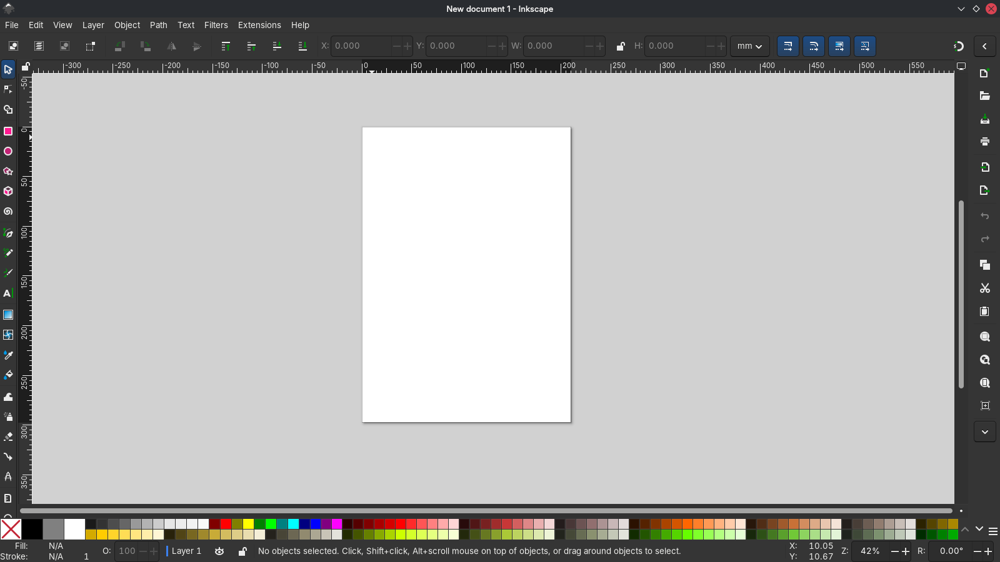

Personal computer desktop and/or laptop designed for technical or scientific applications. The main desktop environment is Plasma, but we occasionally use GNOME, and sometimes we use a window manager like Openbox, Sway, Hyperland.

Visit
https://cdimage.debian.org/debian-cd/current/amd64/bt-dvd/.
Download the
image.
naf@syenasweta:~/home/naf/Downloads/# ls
debian-13.0.0-amd64-DVD-1.iso SHA256SUMS SHA256SUMS.sign SHA512SUMS SHA512SUMS.signnaf@syenasweta:~/Downloads/# gpg --keyserver keyring.debian.org --recv-keys DA87E80D6294BE9B
naf@syenasweta:~/Downloads/# gpg --list-keys | less
naf@syenasweta:~/Downloads/# gpg --list-keys DA87E80D6294BE9B
naf@syenasweta:~/Downloads/# gpg --verify SHA512SUMS.sign SHA512SUMS
naf@syenasweta:~/Downloads/# sha512sum --check --ignore-missing SHA512SUMSroot@syenasweta:~# lsblk
root@syenasweta:~# dd if=/home/naf/Downloads/debian/debian-13.0.0-amd64-DVD-1.iso of=/dev/sdc bs=1M status=progress oflag=sync

As root, add to
/etc/apt/sources.list.d/debian.sources.
# Modernized from /etc/apt/sources.list
Types: deb deb-src
URIs: http://deb.debian.org/debian/
Suites: testing
Components: main non-free-firmware contrib non-free
Signed-By: /usr/share/keyrings/debian-archive-keyring.gpg
# Modernized from /etc/apt/sources.list
Types: deb deb-src
URIs: http://security.debian.org/debian-security/
Suites: testing-security
Components: main non-free-firmware contrib non-free
Signed-By: /usr/share/keyrings/debian-archive-keyring.gpg
# Modernized from /etc/apt/sources.list
Types: deb deb-src
URIs: http://deb.debian.org/debian/
Suites: testing-updates
Components: main non-free-firmware contrib non-free
Signed-By: /usr/share/keyrings/debian-archive-keyring.gpg
# Modernized from /etc/apt/sources.list
Types: deb deb-src
URIs: http://deb.debian.org/debian/
Suites: unstable
Components: main non-free-firmware contrib non-free
Signed-By: /usr/share/keyrings/debian-archive-keyring.gpg
# Modernized from /etc/apt/sources.list
Types: deb deb-src
URIs: https://deb.debian.org/debian/
Suites: experimental
Components: main non-free-firmware contrib non-free
Signed-By: /usr/share/keyrings/debian-archive-keyring.gpgAs root, add to /etc/apt/sources.list.
#deb cdrom:[Debian GNU/Linux 13.0.0 _Trixie_ - Official amd64 NETINST with firmware 20250809-11:20]/ trixie contrib main non-free-firmware
deb http://deb.debian.org/debian/ trixie main non-free-firmware contrib non-free
deb-src http://deb.debian.org/debian/ trixie main non-free-firmware contrib non-free
deb http://security.debian.org/debian-security trixie-security main non-free-firmware contrib non-free
deb-src http://security.debian.org/debian-security trixie-security main non-free-firmware contrib non-free
# trixie-updates, to get updates before a point release is made;
# see https://www.debian.org/doc/manuals/debian-reference/ch02.en.html#_updates_and_backports
deb http://deb.debian.org/debian/ trixie-updates main non-free-firmware contrib non-free
deb-src http://deb.debian.org/debian/ trixie-updates main non-free-firmware contrib non-free
# This system was installed using removable media other than
# CD/DVD/BD (e.g. USB stick, SD card, ISO image file).
# The matching "deb cdrom" entries were disabled at the end
# of the installation process.
# For information about how to configure apt package sources,
# see the sources.list(5) manual.
# debian-backports
deb http://deb.debian.org/debian trixie-backports main non-free-firmware contrib non-free
deb-src http://deb.debian.org/debian trixie-backports main non-free-firmware contrib non-freeRead the document in the link: https://wiki.debian.org/DebianTesting.
#deb cdrom:[Debian GNU/Linux 13.0.0 _Trixie_ - Official amd64 NETINST with firmware 20250809-11:20]/ trixie contrib main non-free-firmware
deb http://deb.debian.org/debian/ testing main non-free-firmware contrib non-free
deb-src http://deb.debian.org/debian/ testing main non-free-firmware contrib non-free
deb http://security.debian.org/debian-security testing-security main non-free-firmware contrib non-free
deb-src http://security.debian.org/debian-security testing-security main non-free-firmware contrib non-free
# trixie-updates, to get updates before a point release is made;
# see https://www.debian.org/doc/manuals/debian-reference/ch02.en.html#_updates_and_backports
# deb http://deb.debian.org/debian/ trixie-updates main non-free-firmware contrib non-free
# deb-src http://deb.debian.org/debian/ trixie-updates main non-free-firmware contrib non-free
# This system was installed using removable media other than
# CD/DVD/BD (e.g. USB stick, SD card, ISO image file).
# The matching "deb cdrom" entries were disabled at the end
# of the installation process.
# For information about how to configure apt package sources,
# see the sources.list(5) manual.
# debian-backports
# deb http://deb.debian.org/debian trixie-backports main non-free-firmware contrib non-free
# deb-src http://deb.debian.org/debian trixie-backports main non-free-firmware contrib non-free#deb cdrom:[Debian GNU/Linux 13.0.0 _Trixie_ - Official amd64 NETINST with firmware 20250809-11:20]/ trixie contrib main non-free-firmware
deb http://deb.debian.org/debian/ testing main non-free-firmware contrib non-free
deb-src http://deb.debian.org/debian/ testing main non-free-firmware contrib non-free
deb http://security.debian.org/debian-security testing-security main non-free-firmware contrib non-free
deb-src http://security.debian.org/debian-security testing-security main non-free-firmware contrib non-free
# trixie-updates, to get updates before a point release is made;
# see https://www.debian.org/doc/manuals/debian-reference/ch02.en.html#_updates_and_backports
# deb http://deb.debian.org/debian/ trixie-updates main non-free-firmware contrib non-free
# deb-src http://deb.debian.org/debian/ trixie-updates main non-free-firmware contrib non-free
# This system was installed using removable media other than
# CD/DVD/BD (e.g. USB stick, SD card, ISO image file).
# The matching "deb cdrom" entries were disabled at the end
# of the installation process.
# For information about how to configure apt package sources,
# see the sources.list(5) manual.
# debian-backports
# deb http://deb.debian.org/debian trixie-backports main non-free-firmware contrib non-free
# deb-src http://deb.debian.org/debian trixie-backports main non-free-firmware contrib non-free
# testing-unstable mix
deb http://deb.debian.org/debian/ unstable main non-free-firmware contrib non-free
deb-src http://deb.debian.org/debian/ unstable main non-free-firmware contrib non-free# Testing-Unstable-Experimental Mix User
# Read the docs:
# https://wiki.debian.org/DebianStable
# https://wiki.debian.org/DebianTesting
# https://wiki.debian.org/DebianUnstable
# https://wiki.debian.org/DebianExperimental
# testing
deb http://deb.debian.org/debian/ testing main non-free-firmware contrib non-free
deb-src http://deb.debian.org/debian/ testing main non-free-firmware contrib non-free
deb http://security.debian.org/debian-security testing-security main non-free-firmware contrib non-free
deb-src http://security.debian.org/debian-security testing-security main non-free-firmware contrib non-free
# testing-updates
deb http://deb.debian.org/debian/ testing-updates main non-free-firmware contrib non-free
deb-src http://deb.debian.org/debian/ testing-updates main non-free-firmware contrib non-free
# backports
# deb http://deb.debian.org/debian testing-backports main non-free-firmware contrib non-free
# deb-src http://deb.debian.org/debian testing-backports main non-free-firmware contrib non-free
# unstable
deb http://deb.debian.org/debian/ unstable main non-free-firmware contrib non-free
deb-src http://deb.debian.org/debian/ unstable main non-free-firmware contrib non-free
# experimental
deb https://deb.debian.org/debian/ experimental main non-free-firmware contrib non-free
deb-src http://deb.debian.org/debian/ experimental main non-free-firmware contrib non-freealacrittyapt install alacrittyapache2apt install apache2apache2-docapt install apache2-docapt-transport-httpsapt install apt-transport-httpsatrilapt install atrilaudaciousapt install audaciousaudacityapt install audacityblenderapt install blenderbtopapt install btopcalibreapt install calibrechromiumapt install chromiumcocpitapt install cockpit/trixie-backportscolor-pickerapt install color-pickercpu-xapt install cpu-xcurlapt install curlebook-speakerapt install ebook-speakerdconf-editorapt install dconf-editorfastfetchapt install fastfetchffmpegapt install ffmpegfilezillaapt install filezillafonts-crosextra-caladeaapt install fonts-crosextra-caladeafonts-interapt install fonts-interfonts-crosextra-carlitoapt install fonts-crosextra-carlitofonts-jetbrains-monoapt install fonts-jetbrains-monofont-managerapt install font-managerfont-viewerapt install font-viewerfreecadapt install freecadfreeplaneapt install freeplanegeanyapt install geanygdebiapt install gdebigimpapt install gimpgitapt install gitgnome-power-managerapt install gnome-power-managergnucashapt install gnucashgpartedapt install gpartedgscan2pdfapt install gscan2pdfgsmartcontrolapt install gsmartcontrolgstreamer1.0-vaapiapt install gstreamer1.0-vaapigthumbapt install gthumbhardinfoapt install hardinfohtopapt install htopinkscapeapt install inkscapeimg2pdfapt install img2pdfkdenliveapt install kdenlivekde-config-plymouthapt install kde-config-plymouthkicadapt install kicad kicad-footprints kicad-libraries kicad-packages3d kicad-symbols kicad-templates kicad-doc-en kicad-demoskraftapt install kraftkritaapt install kritalibavcodec-extraapt install libavcodec-extralibrecadapt install librecadlibxcb-xtest0apt install libxcb-xtest0lshwapt install lshwnautilus-adminapt install nautilus-adminneovimapt install neovimnvidianvidia-legacy-390xx-driverFor Thinkpad W520.
apt install nvidia-legacy-390xx-drivernvidia-tesla-470-driverFor Acer E5-473G.
apt install nvidia-tesla-470-driverRead the docs:
apt install nvidia-detectocrmypdfapt install ocrmypdfobs-studioapt install obs-studioopenscadapt install openscadpandocapt install pandoc pandoc-citeproc-preamble pandoc-data pandoc-filter-diagram pandoc-plantuml-filter pampipapirus-icon-themeapt install papirus-icon-themepartitionmanagerapt install partitionmanagerpdfarrangerapt install pdfarrangerpdfsamapt install pdfsampdftkapt install pdftkphotocollageapt install photocollagephpapt install phpplymouthapt install plymouthplymouth-themesapt install plymouth-themesplymouth-theme-breezeapt install plymouth-theme-breezepoppler-utilsapt install poppler-utilsprinter-driver-allapt install printer-driver-allqdiskinfoapt install qdiskinfoqmkapt install qmkrarapt install rarscribusapt install scribusslic3rapt install slic3rsweethome3dapt install sweethome3dtesseract-ocrapt install tesseract-ocrterminatorapt install terminatortexliveapt install texlivethunarapt install thunarthunderbirdapt install thunderbirdttf-mscorefonts-installerapt install ttf-mscorefonts-installertreeapt install treeufwapt install ufwunrarapt install unrarusbviewapt install usbviewvlcapt install vlcwgetapt install wgetwifi-qrapt install wifi-qrchromegh wget -qO- https://cli.github.com/packages/githubcli-archive-keyring.gpg | tee /etc/apt/keyrings/githubcli-archive-keyring.gpg > /dev/null \
&& chmod go+r /etc/apt/keyrings/githubcli-archive-keyring.gpg \
&& echo "deb [arch=$(dpkg --print-architecture) signed-by=/etc/apt/keyrings/githubcli-archive-keyring.gpg] https://cli.github.com/packages stable main" | tee /etc/apt/sources.list.d/github-cli.list > /dev/null
&& apt update
&& apt install ghodafileconverterpandocDownload the latest release of Pandoc via
https://github.com/jgm/pandoc/releases/latest.
wget https://github.com/jgm/pandoc/releases/download/3.3/pandoc-3.3-1-amd64.debInstall pandoc-3.3-1-amd64.deb via Gdebi.
qmk-firmwareVisit https://github.com/qmk/qmk_fpm
echo "deb https://linux.qmk.fm/ $(lsb_release --codename --short) main" | tee /etc/apt/sources.list.d/qmk.list
wget -qO - https://linux.qmk.fm/gpg_pubkey.txt | gpg --dearmor | tee /etc/apt/trusted.gpg.d/qmk-gpg-pubkey.gpg > /dev/null
apt update && upgrade
apt install qmk[!NOTES] In Debian repositories there is also a
qmkpackage
signal wget -O- https://updates.signal.org/desktop/apt/keys.asc | gpg --dearmor > signal-desktop-keyring.gpg
cat signal-desktop-keyring.gpg | tee /usr/share/keyrings/signal-desktop-keyring.gpg > /dev/null
echo 'deb [arch=amd64 signed-by=/usr/share/keyrings/signal-desktop-keyring.gpg] https://updates.signal.org/desktop/apt xenial main' |\
tee /etc/apt/sources.list.d/signal-xenial.list
apt update
apt install signaltyporawget -qO - https://typora.io/linux/public-key.asc | tee /etc/apt/trusted.gpg.d/typora.asc
add-apt-repository 'deb https://typora.io/linux ./'
apt update && apt upgrade
apt install typoravscodewget -qO- https://packages.microsoft.com/keys/microsoft.asc
gpg --dearmor > packages.microsoft.gpg
install -D -o root -g root -m 644 packages.microsoft.gpg /etc/apt/keyrings/packages.microsoft.gpg
echo "deb [arch=amd64,arm64,armhf signed-by=/etc/apt/keyrings/packages.microsoft.gpg] https://packages.microsoft.com/repos/code stable main" | tee /etc/apt/sources.list.d/vscode.list > /dev/null
rm -f packages.microsoft.gpg
apt update && apt upgrade
apt install codezoteroVisit https://www.zotero.org/download/
and download the latest version of Zotero. As root:
cd /opt
wget https://download.zotero.org/client/release/7.0.22/Zotero-7.0.22_linux-x86_64.tar.bz2
tar -xjvf Zotero-7.0.22_linux-x86_64.tar.bz2
rm -rf Zotero-7.0.22_linux-x86_64.tar.bz2
mkdir zotero
cd Zotero_linux-x86_64
mv * /opt/zotero/
cd /opt
rm -rf Zotero_linux-x86_64
cd /
chmod +x /opt/zotero/set_launcher_icon
./opt/zotero/set_launcher_icon # or bash /opt/zotero/set_launcher_icon
ln -s /opt/zotero/zotero.desktop /home/naf/.local/share/applications/zotero.desktopzotero-better-bibtexVisit https://github.com/retorquere/zotero-better-bibtex/releases/latest
and download .xpifile.
Run Zotero.
apt purge gnome-gamesSet grub background image
/etc/default/grub.
GRUB_BACKGROUND=""update-grubCopy image to /usr/share/images/vendor-logos/:
cp syenasweta-logo-text-version-64.svg /usr/share/images/vendor-logos/Edit file in /etc/gdm3/greeter.dconf-defaults. Add
this:
# Login manager options
# =====================
[org/gnome/login-screen]
#logo='/usr/share/images/vendor-logos/logo-text-version-64.png'
logo='/usr/share/images/vendor-logos/syenasweta-logo-text-version-64.svg'And:
dpkg-reconfigure gdm3https://wiki.debian.org/GDM#Customizing_the_GDM_appearanceEdit file in /etc/gdm3/greeter.dconf-defaults. Uncomment
disable-user-list=true:
# - Disable user list
# disable-user-list=true
disable-user-list=trueAnd:
dpkg-reconfigure gdm3https://extensions.gnome.org/extension/4269/alphabetical-app-grid/
https://cockpit-project.org/running.html#debian
Zoom
Bibtex
I am not using Flatpak yet.